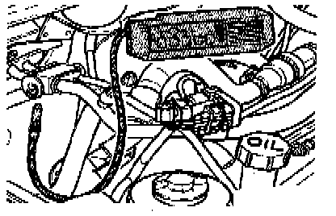

Checking A/C Refrigerant System for Leaks

Use halogen leak detector, Hitec HI400A-TEL or equivalent, to check for refrigerant leaks, following the leak detector manufacturer's instructions.
Refrigerant gas dissipates very quickly. To make the job easier, avoid drafty or windy areas when checking for leaks.
If the refrigerant system is discharged (empty), re-charge the system with approx. 100 g (3.5 oz) of refrigerant in order to check for leaks.